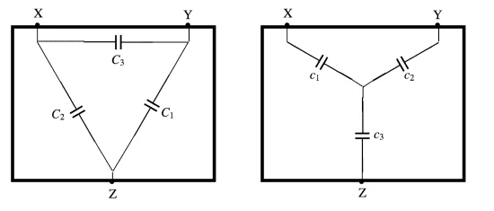

Associações de Capacitores
Capacitores em Série
Quando capacitores são conectados em série, a carga total é a mesma para todos os capacitores, enquanto a tensão total é a soma das tensões individuais. Isso significa que a capacitância total (C) equivalente de capacitores em série é calculada pela fórmula:
Nessa configuração, os capacitores têm a mesma carga em todos eles, mas a tensão total é dividida entre eles. A imagem ilustrativa pode mostrar vários capacitores conectados um após o outro, com uma única corrente fluindo através de todos eles, destacando a distribuição da tensão.
Capacitores em Paralelo
Quando capacitores estão em paralelo, a tensão total é a mesma para todos, enquanto a carga total é a soma das cargas individuais. A capacitância total (C) equivalente de capacitores em paralelo é calculada somando-se as capacitâncias individuais:
Nessa configuração, todos os capacitores têm a mesma tensão, mas a carga total é a soma das cargas individuais de cada capacitor. A imagem sugerida pode representar vários capacitores conectados lado a lado, todos com a mesma tensão aplicada, enfatizando como a carga total é distribuída entre eles.
Outros Arranjos de Capacitores
Além das configurações comuns de série e paralelo, existem outros arranjos que podem ser úteis em diferentes aplicações:
- Associação Mista: Combina capacitores em série e paralelo para alcançar valores específicos de capacitância.
- Redes em Estrela e Delta: Utilizadas em sistemas elétricos complexos para controle de potência reativa.
- Hierarquias em Circuitos Integrados: Organização em múltiplas camadas para filtragem e estabilização em eletrônica avançada.
- Arranjos Específicos em Microeletrônica: Configurações para minimizar ruídos e interferências em circuitos integrados.
Cada tipo de configuração oferece vantagens específicas dependendo das necessidades do projeto, como eficiência, resposta de frequência e redução de interferências. As imagens sugeridas ajudam a visualizar como os capacitores se comportam em diferentes configurações elétricas, facilitando a compreensão dos conceitos apresentados.
Referências
- [1]: Boylestad, R. L., & Nashelsky, L. (2016). Electronic Devices and Circuit Theory. Boston: Pearson.